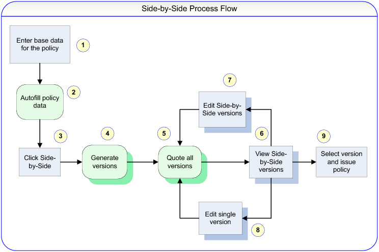

Side-by-side Quoting Process Flow The following illustration shows the process flow of side-by-side quoting.  1. In PolicyCenter, the user enters base data for the policy such as the primary named insured and contacts on the policy. 2. PolicyCenter automatically fills in territory codes and similar data. 3. The user selects Versions → Start Side-by-Side to enter side-by-side mode. 4. PolicyCenter generates multiple versions of the policy by using business logic configured for the line of business. The number of versions is also configurable. 5. PolicyCenter generates quotes for all versions. 6. The user views a screen showing side-by-side versions of the policy. 7. The user makes modification to the side-by-side data, such as making changes to coverages. Then to compare the costs of the different versions, the user quotes the policy (step 5). 8. Alternately, the user can edit a single version and change the base data or side-by-side data. PolicyCenter copies changes to base data to the other side-by-side versions. Then to compare the costs of the different versions, the user quotes the policy (step 5). 9. The user selects a version and issues the policy.